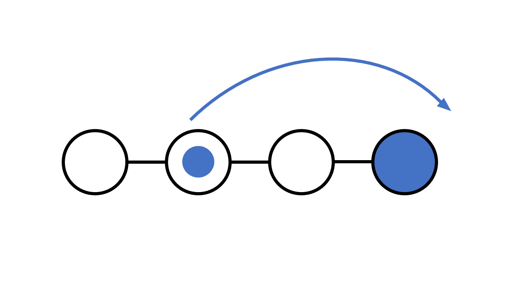
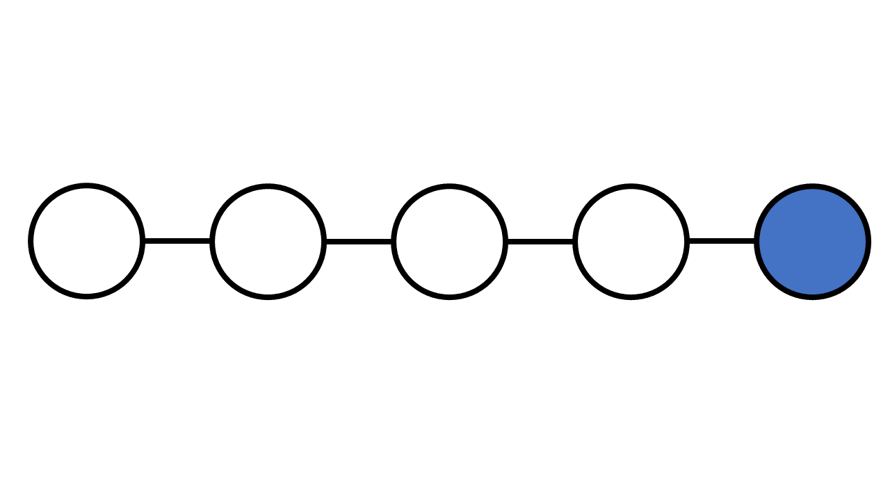

Git Revert
Git Revert
revert is the command we use when we want to take a previous commit and add it as a new commit, keeping the log intact.
Step 1: Find the previous commit:
Step 2: Use it to make a new commit:
Let's make a new commit, where we have "accidentally" deleted a file:
[master 16a6f19] Just a regular update, definitely no accidents here...
1 file changed, 0 insertions(+), 0 deletions(-)
delete mode 100644 img_hello_git.jpg
Now we have a part in our commit history we want to go back to. Let's try and do that with revert.
Git Revert Find Commit in Log
First thing, we need to find the point we want to return to. To do that, we need to go through the log.
To avoid the very long log list, we are going to use the --oneline option, which gives just one line per commit showing:
- The first seven characters of the commit hash
- the commit message
So let's find the point we want to revert:
9a9add8 (origin/master) Added .gitignore
81912ba Corrected spelling error
3fdaa5b Merge pull request #1 from tasty-git-sample/update-readme
836e5bf (origin/update-readme, update-readme) Updated readme for GitHub Branches
daf4f7c (origin/html-tasty-git, html-tasty-git) Updated index.html with basic meta
facaeae (gh-page/master) Merge branch 'master' of https://github.com/LightLotus/tasty-git.git
e7de78f Updated index.html. Resized image
5a04b6f Updated README.md with a line about focus
d29d69f Updated README.md with a line about GitHub
e0b6038 merged with hello-world-images after fixing conflicts
1f1584e added new image
dfa79db updated index.html with emergency fix
0312c55 Added image to Hello World
09f4acd Updated index.html with a new line
221ec6e First release of Hello World!
We want to revert to the previous commit: 52418f7 (HEAD -> master) Just a regular update, definitely no accidents here..., and we see that it is the latest commit.
Git Revert HEAD
We revert the latest commit using git revert HEAD (revert the latest change, and then commit), adding the option --no-edit to skip the commit message editor (getting the default revert message):
[master e56ba1f] Revert "Just a regular update, definitely no accidents here..."
Date: Thu Jun 22 10:50:13 2022 +0200
1 file changed, 0 insertions(+), 0 deletions(-)
create mode 100644 img_hello_git.jpg
Now let's check the log again:
e56ba1f (HEAD -> master) Revert "Just a regular update, definitely no accidents here..."
52418f7 Just a regular update, definitely no accidents here...
9a9add8 (origin/master) Added .gitignore
81912ba Corrected spelling error
3fdaa5b Merge pull request #1 from w3schools-test/update-readme
836e5bf (origin/update-readme, update-readme) Updated readme for GitHub Branches
daf4f7c (origin/html-tasty-git, html-tasty-git) Updated index.html with basic meta
facaeae (gh-page/master) Merge branch 'master' of https://github.com/LightLotus/tasty-git.git
e7de78f Updated index.html. Resized image
5a04b6f Updated README.md with a line about focus
d29d69f Updated README.md with a line about GitHub
e0b6038 merged with hello-world-images after fixing conflicts
1f1584e added new image
dfa79db updated index.html with emergency fix
0312c55 Added image to Hello World
09f4acd Updated index.html with a new line
221ec6e First release of Hello World!
Note: To revert to earlier commits, use git revert HEAD~x (x being a number. 1 going back one more, 2 going back two more, etc.)